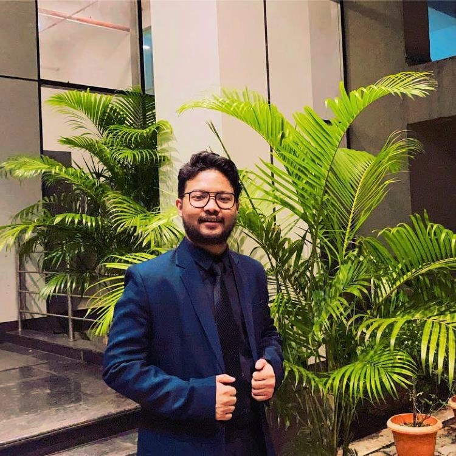

Contact:sanjaykazi1149@gmail.com
LinkedIn:linkedin.com/in/sanjay-kazi
Github:github.com/sanjaykazi
|  |
I am a third-year UG student at IIT Bombay. Always looking forward to new learning and experiences due to my curious nature. Keeping myself well informed about the changing technologies and other developments always helps me in the long run. I found Data Science as the most exciting subject in my B-Tech years and I want to pursue my future in it. Coding has also interested me as I spend daily hours in it. Apart from academia, I am a nature lover and social worker. Achieving all this is the source of my constant motivation. |
May 2023 - Present
June 2022 - April 2023
May 2021 - August 2021
Working on it...
I never thought of any other IITs, I just had to be in IITB.
I engjoy reading books, and I feel more confident when gathering knowledge about our glorious past. Mythology attracts me naturally.
Yeah! It will be definitely something huge. I am a farsighted man and optimistic one. So I would say i will be a happy man.